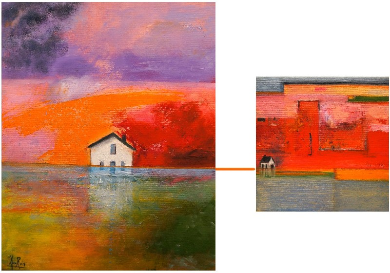

La maison ou le pouvoir de rentrer en soi-même (2012)
Une exploration intérieure, un voyage au cœur de la maison, à la recherche de soi-même.

Maison chrysalide

Maison sacrée

Maison paradis perdu

Maison Floride
« Rentrer dans la maison, c’est peut-être rentrer en soi-même… »